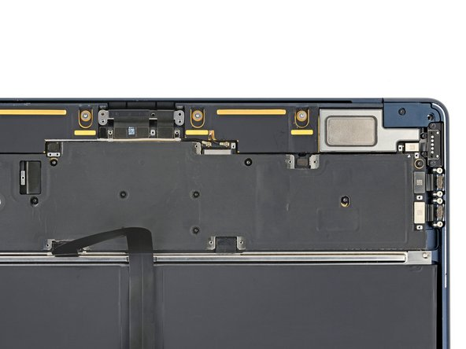

Triage a MacBook and prove which module needs service
Differentiate Intel and Apple silicon startup paths, service a model-specific USB-C board and verify calibration, data and port functions.
Identify the Mac and the path it can reach
Record exact model, generation and chip, including whether an Intel model has the T2 chip. Confirm data ownership and backup before major repair. The photos below show a 2022 M2 Air. The service exercise links Apple’s 13-inch M4 2025 documentation. Use the guide for the Mac actually on your bench.
- Check supported charger, known-good cable, indicators and external display. Test each supported port independently and reduce variables such as docks.
- Start Apple Diagnostics using the official model path. On Apple silicon press and hold power to the startup options, then use Command-D. On Intel hold D at startup for the documented diagnostic path. Save exact results and the test that could or could not run.
- Record whether macOS Recovery or startup options can be reached. For eligible Macs with a firmware symptom, Apple documents revive and restore with a second Mac and a supported cable. Treat revive as a data-preserving attempt and restore as erasing. Stop before an erase unless authorized and covered by the job record. Use the official model-specific DFU port and instructions.

Photo by Arthur Shi and iFixit contributors, with added labels. Original guide · CC BY-NC-SA 3.0.

Photo by Spencer Day and iFixit contributors, with added labels. Original guide · CC BY-NC-SA 3.0.
iFixit opens the M2 MacBook Air and shows its logic board and modules.
Prove a serviceable USB-C fault before opening
On the 13-inch M4 training model, test the same known-good PD charger and a separate known-good data device on each port, including cable orientation. Add a display test with rated equipment if supported. Record whether MagSafe works. One port losing charge and data while its sibling passes points toward the local port path. Follow Apple’s bottom-case, battery isolation and USB-C board procedure for that exact model. Compare board and fasteners before installation. The 2022 photos teach identification of cables and board functions, and the M4 guide shows the service assembly for the exercise.
Complete reassembly and verify the job
Repeat charging, data and display tests where applicable. Check Apple Diagnostics again. Determine from Apple’s current table whether the repaired part requires Repair Assistant, and use the supported procedure. Record function, calibration status and any remaining work privately. A logic-board swap can change access to data, Touch ID and other associated parts; plan backup and part completion before approving that job.
Related lesson and source material
T57 · How laptop power, firmware, storage and operating systems meet.